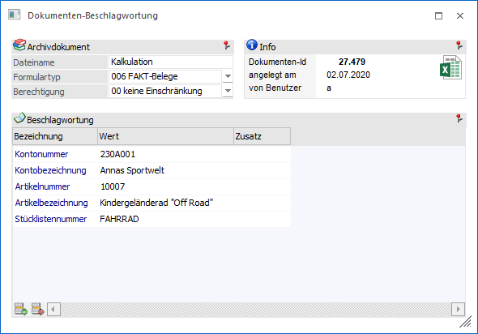
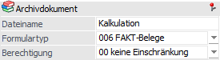
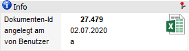
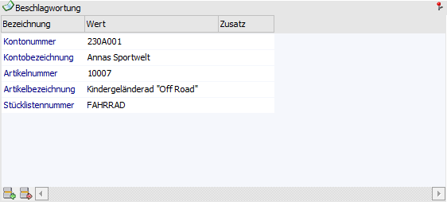
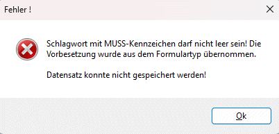
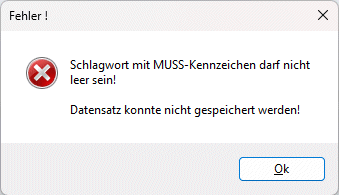
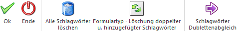

In dem Fenster "Dokumenten-Beschlagwortung" können Schlagwörter zu einem Archivdokument hinzugefügt bzw. vorhandene Schlagwörter bearbeitet werden. Der Aufruf ist dabei folgendermaßen möglich:
ü In einer Archivanzeige (Archiv Suche, Archiveintrag suchen, WinLine INFO-Module, etc.) über die rechte Maustaste der Eintrag "Beschlagwortung" aus dem Kontextmenü gewählt.
ü In der Vorschau am Bildschirm (Ausgabe einer Auswertung auf den Bildschirm) wird im Kontextmenü (rechte Maustaste ins Formular) die Funktion "Neuer Archiveintrag" angewählt.
ü Es wird ein Dokument per Drag & Drop in das Register "Kopf" der Belegerfassung gezogen.
Achtung
Das Fenster öffnet sich nur, wenn in den Archiv-Parameter die Option "Schlagwortfenster bei Archivierung zu Beleg öffnen" aktiviert wurde und eine WinLine ARCHIV-Lizenz vorliegt.
Hinweis
Wird ein Dokument in die
Belegerfassung "gezogen", so wird in dem sich öffnenden Fenster automatisch das
Schlagwort "001 - Kontonummer" mit dem Wert der Kontonummer des Belegs
vorbelegt. Zusätzlich wird, bei entsprechender Zuordnung im Programm
"Formulartypen - Dateierweiterungen / Beschlagwortung", der Formulartyp
automatisch gesetzt. Die dazu definierten Schlagwörter werden durch Bestätigung
des Typs hinzugefügt. Eine manuelle Hinterlegung von Schlagwörtern ist natürlich
möglich.
Zusätzlich zu den selbst angegebenen Schlagwörtern werden die
"Beleg-Schlagwörter" (sofern definiert) bei der Archivanalyse dem Archiveintrag
hinzugefügt.
Wenn mehrere Dokumente gleichzeitig ins Belegerfassen gezogen
werden, so wird das Fenster zur Schlagworteingabe nur einmal geöffnet.

Archivdokument

Ø Dateiname
An dieser Stelle kann die Beschlagwortung des Schlagworts "000 - Dateiname" definiert werden.
Ø Formulartyp
Aus der Auswahlliste kann ein Formulartyp gewählt werden, um vordefinierte Schlagwörter in die Schlagworttabelle zu hinterlegen. Zusätzlich dient der Formulartyp als Selektionskriterium in diversen Archivanzeigen.
Ø Berechtigung
Aus der Auswahlliste kann ein Berechtigungsprofil gewählt werden, um die Zugriffsberechtigung für das Dokument zu steuern.
Hinweis
Benutzern des Typs "Administrator" oder mit der Administratorenberechtigung "Benutzeradministrator" steht in der Auswahlbox der Punkt ">> Neues Profil" zur Verfügung. Über die Anwahl dieses Eintrags kann in der Folge ein neues Berechtigungsprofil angelegt werden.
Info

An diesem Bereich werden weitere Information zu dem Archivdokument zur Verfügung gestellt.
Tabelle "Beschlagwortung"

In der Tabelle werden alle Schlagwörter aufgeführt, die bei der Archivierung ausgefüllt werden sollen. Diese stammen hierbei standardmäßig aus dem Formulartyp. Die Beschlagwortung dient in der späteren Archivsuche zum schnellen und einfachen Suchen der gewünschten Dokumente.
Ø Bezeichnung
In dieser Spalte wird die Bezeichnung des Schlagworts angezeigt. Neue Schlagwörter können per Schlagwortnummer, Autovervollständigung oder Matchcode-Suche hinzugefügt werden.
Ø Wert
An dieser Stelle wird die Beschlagwortung zu dem entsprechenden Schlagwort hinterlegt.
Hinweis
Alle Datumsschlagwörter werden in das Format JJJJ-MM-TT formatiert, damit man eine korrekte Sortierung bei der Suche von Archiveinträgen durchführen kann.
Ø Zusatz
Bei der Beschlagwortung "031 - E-Mail" kann in dieser Spalte angegeben werden, um was für eine E-Mailadresse es sich handelt. Zur Auswahl stehen hierfür:
ü 0 - Absender
ü 1 - Empfänger
ü 2 - CC
ü 3 - BCC
Prüfung Pflichtfelder
Sind im verwendeten Formulartyp so genannte Pflichtfelder enthalten, so wird dies beim Speichern des Archivdokuments in diesem Fenster geprüft. D.h. Schlagwörter die lt. Formulartyp als Pflichtfelder gekennzeichnet sind, müssen mit einem Wert befüllt sein. Ohne eine Hinterlegung eines Wertes zum Pflichtfeld ist ein Speichern nicht möglich. Dies wird mit einer entsprechenden Meldung dargestellt, wobei es hierzu 2 Möglichkeiten (lt. Einstellung der Vorbesetzung im Formulartyp) gibt.
ü
Vorbesetzung "0 - Standardeinstellung"
Ist das Pflichtfeld mit dieser
Vorbesetzung belegt, so erfolgt beim Speichern eine Warnung und das Feld wird
mit dem Wert der „globalen“ Variable belegt.

ü
Vorbesetzung "1 - keine Vorbesetzung"
Ist das Pflichtfeld mit dieser
Vorbesetzung belegt, so erfolgt beim Speichern eine entsprechende Warnung, es
werden jedoch keine automatischen Belegungen des Feldes vorgenommen.

Tabellenbuttons

Ø Zeile einfügen
Durch Anwählen des "Einfügen"-Buttons können neue Schlagwörter hinzugefügt werden.
Ø Zeile entfernen
Durch Anklicken des "Entfernen"-Buttons können Schlagwörter gelöscht werden.
Ø Ausgabe Excel
Durch Anwahl des Buttons "Ausgabe Excel" wird der Inhalt der Tabelle an Microsoft Excel übergeben.
Ø Tabelleneinstellungen speichern
Die Spalten einer Tabelle können grundsätzlich an beliebige Positionen verschoben, bzw. in der Breite entsprechend angepasst werden. Durch Anwahl des Buttons "Tabelleneinstellungen speichern" werden die Einstellungen benutzerspezifisch gespeichert und bei dem nächsten Aufruf des Programmpunktes wieder vorgeschlagen.
Ø Gesamteinstellungen speichern
Im Gegensatz zu "Tabelleneinstellungen speichern" können mit "Gesamteinstellungen speichern" mehrere Tabellenaufbauten gespeichert und nach Wunsch geladen werden. Zusätzlich werden Sonderfunktionen der Tabelle (z.B. "Spalte gruppieren") ebenfalls bei der Speicherung bedacht.
Buttons

Ø Ok
Mit dem Button "Ok" bzw. der Taste F5 können die Dokumente bzw. zugewiesenen Schlagwörter samt deren Beschlagwortung gespeichert werden.
Ø Ende
Durch Drücken des Buttons "Ende" bzw. der Taste ESC wird das Fenster geschlossen und alle getätigten Änderungen verworfen.
Ø Alle Schlagwörter löschen
Bei Anwahl dieses Buttons werden alle Schlagwörter (durch den Formulartyp vorbelegte und manuell hinzugefügte) gelöscht.
Ø Formulartyp - Löschung doppelter u. hinzugefügter Schlagwörter
Durch Anwählen dieses Buttons werden alle Schlagwörter entfernt, welche nicht in dem gewählten Formulartyp zugeordnet sind.
Ø Schlagwörter Dublettenabgleich
Enthält ein Dokument identische Beschlagwortungen (Schlagwort + Wert), so können diese mittels "Schlagwörter Dublettenabgleich" automatisch entfernt werden.